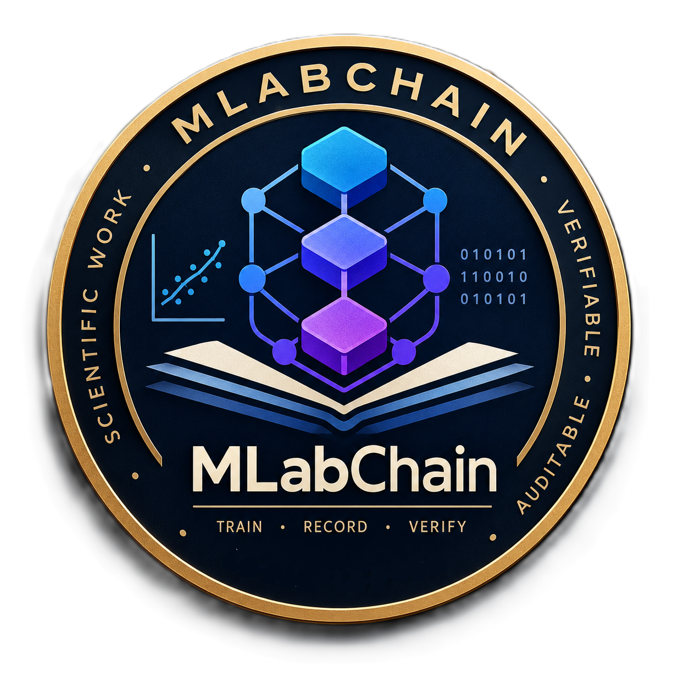
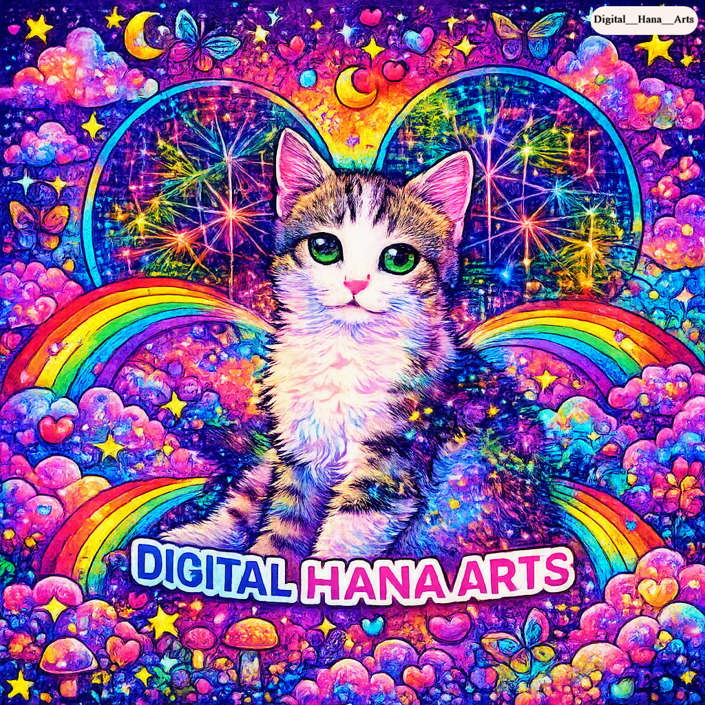

AI
AI
Why Predicting Crypto Prices is an Art at the Edge of Math and Intuition
Predicting the price of cryptocurrencies like Tron (TRX) is not just a statistical problem. We share our experience building TRX Forecast.
Notes, essays, and short articles on digital art, AI, blockchain, data philosophy, and everything happening in our studio.
AI
Predicting the price of cryptocurrencies like Tron (TRX) is not just a statistical problem. We share our experience building TRX Forecast.

BlockchainFrom the initial idea at CERN to the Train-Record-Verify system — a narrative of blockchain and open science.

ArtWhy is our studio named after a cat? A short narrative of the bond between name and thought at DHA.
 AI
AI
A non-technical look at Generative Adversarial Networks — from the game theory idea to the birth of unseen images.